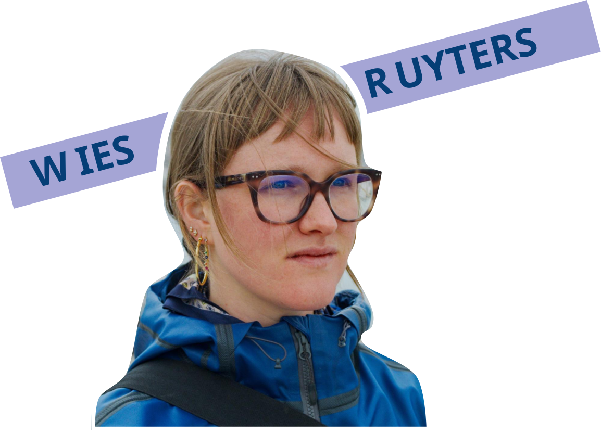
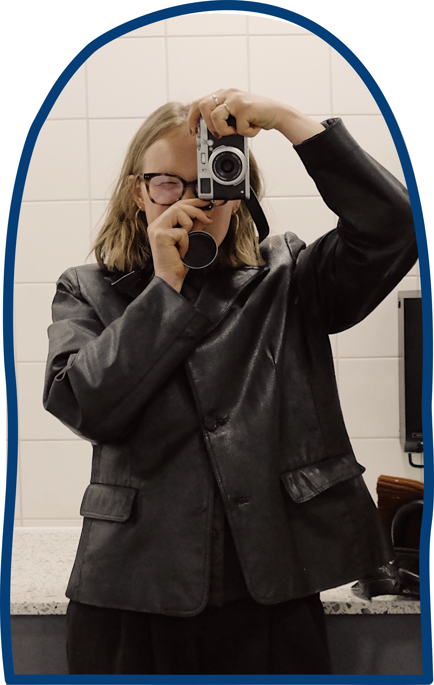
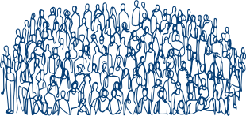

Thursday, September 10th 2026
Kráków, Poland
Panel: Comparing political networks
Project: Connected Conservatives
View presentation on Youtube Download .pdf with notes
Hello! I am Wies and I study political communication in the multimodality, where visuals and text combined shape the meaning of identity and ideology. My favorite research methods are computational, but I am currently exploring other methods as well. Besides my academic work, I also host workshops on high schools about polarisation and media literacy, and I occasionally visualize my projects on my website. Have a nice scroll :)
Within my PhD, I combine theories and insights from political communication with methods and best practices from data science.
Click on the research areas to see what projects I am working on / have worked on. Use < > to move between areas and ∨ ∧ to browse all projects within an area.
Wies Ruyters, Susan Vermeer, Sanne Kruikemeier & Rens Vliegenthart (2025)
Embedding, embedding on the wall; who is the most prominent politician of them all? Exploring automated methods to study multimodal political news coverage
Mariska van Dam, Wies Ruyters
Connected Conservatives: A network study on far right discourse on X.com (running title)
Wies Ruyters, Susan Vermeer & Rens Vliegenthart
Modality matters: the effects of monomodal versus multimodal news coverage on party leader recall
Wies Ruyters, Susan Vermeer, Sanne Kruikemeier & Rens Vliegenthart
The Populist Gaze? A multimodal analysis of the convergence of politicians' Instagram communication and their news portrayals (running title)
Wies Ruyters
Wingwomen: How left-progressive and right-conservative leaders perform femininity on Instagram (running title)
Every academic conference presentation brings a chance to rethink my work and communicate it in a way that narrates, inspires, and provokes - while being fun and relatable.
Use < > to page through a conference's presentations, and scroll down to move through conferences.
‹ newer older ›
Thursday, September 10th 2026
Kráków, Poland
Panel: Comparing political networks
Project: Connected Conservatives
View presentation on Youtube Download .pdf with notesTuesday, September 8th 2026
Kráków, Poland
Panel: War, conflict and information politics
Project: The Populist Gaze
View presentation on Youtube Download .pdf with notesFriday, June 5th 2026
Cape Town, South Africa
High Density Panel:
Political communication
Project: Modality Matters?!
View 3min pitch on Youtube Download .pdfMonday, June 4th 2025
Denver Colorado, USA
Pre-Conference:
Frames of visual transition
Project: Modality Matters?!
View presentation on Youtube Download .pdf with notesThursday, January 29th 2026
Papendal, the Netherlands
Academic poster presentation
Project: The Populist Gaze
Download .pdfThursday, February 3rd 2025
Brugge, Belgium
Panel:
News & Politics
Project: Modality Matters?!
Thursday, February 1st 2026
Rotterdam, the Netherlands
Panel:
Political communication
Project: Embedding on the Wall
View presentation on Youtube Download .pdf with notesFriday, April 25th 2025
Vienna, Austria
Friday, May 3rd 2024
Amsterdam, the Netherlands
Thursday, September 4th 2025
Innsbrück, Austria

I live and work in the Netherlands. Besides being a nerd I greatly enjoy: going outdoors; doing sports (CrossFit, running, cycling); photography (I own a Fujifilm X100S); travelling; writing poetry; cooking; going out; data visualization; graphic design.

Together with my colleague and fellow PhD
Candidate Mariska van Dam, I facilitate
workshops on high schools about societal
polarization, political communication and
media literacy. We have experience with
different education levels, in different
schools across different parts of the
Netherlands. Can we challenge your students
the coming season?
Send us a message!
wies.ruyters@wur.nl